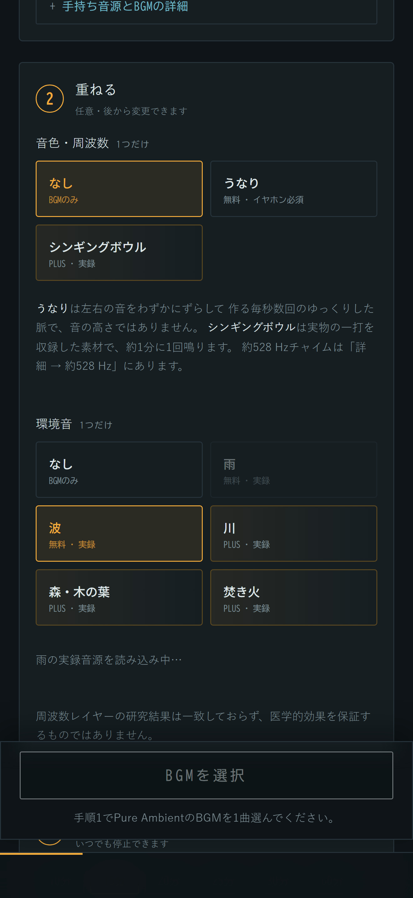
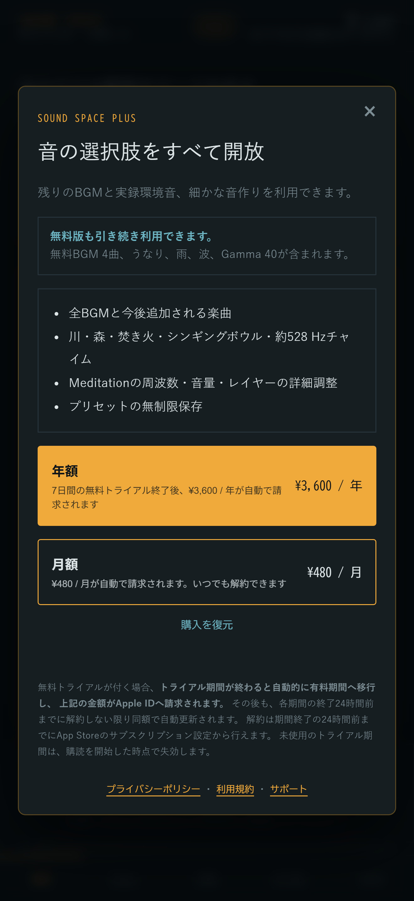
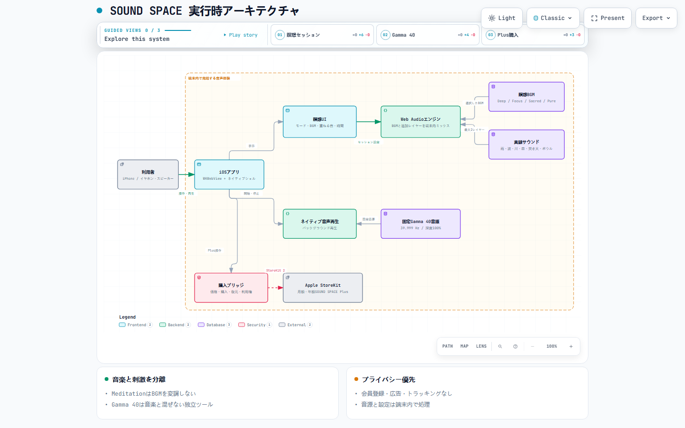

はじめに — iOSは初めてでした
エンジニアではありますが、iOSアプリを作ったことは一度もありませんでした。開発機はWindowsで、Macは持っていません。Xcodeも触ったことがない状態からのスタートです。
その状態で、音を扱うアプリをApp Storeへ届けました。2度差し戻され、3回目の審査で承認されています。この記事は、何を作り、何を作ってから捨て、どこでつまずいたかの記録です。
効果や効能の話は書きません。このアプリが約束できるのは「出している音の仕様が正しいこと」だけで、それ以上は測っていないからです。理由は日本市場の法規制の節で説明します。
何を作ったか — 自分だけの瞑想サウンドを作る
SOUND SPACE の中心にあるのは、自分だけの瞑想サウンドを組み立てられることです。できあいの音源をそのまま流すのではなく、音楽を選び、必要な音だけを重ね、時間を決めて始めます。
| 手順 | 選ぶもの |
|---|---|
| 1. 音楽を選ぶ | 深い瞑想・リラックス・睡眠・集中・ソルフェジオの5モードから選び、収録BGM 20曲のうち1曲を選びます |
| 2. 重ねる | 音色としてうなりかシンギングボウルを1つ。環境音として雨・波・川・森・焚き火から1つ。どちらも「なし」で構わず、後から変更できます |
| 3. 時間を決めて始める | 10分から60分、または無制限。いつでも停止できます |
「重ねる」を任意にしているのが要点です。各モードはBGMだけが鳴る状態から始まります。足すかどうかは利用者が決めます。既定で全部載せにすると、どの音が何なのか分からなくなるためです。
組み合わせは、たとえば「深い瞑想のBGM ＋ 雨 ＋ 20分」や「集中のBGM ＋ 川 ＋ 60分」のように作ります。約528Hzのチャイムを重ねたい場合は詳細画面から追加できます。
独自のバックエンドサーバーはありません。BGM 20曲と環境音7層、合わせて92MBの音源をすべてアプリに同梱しているため、音源再生・記録・解析は機内モードでも動きます。通信を使うのは購入と復元のためのStoreKitだけで、アカウント登録はありません。
| タブ | 役割 |
|---|---|
| 瞑想 | 上の3手順で自分の瞑想サウンドを組み立てる。アプリの中心 |
| Gamma | 40Hz刺激ツール。瞑想サウンドとは独立している |
| 詳細 | 周波数・音量・レイヤーの調整 |
| RECORD | 連続日数と履歴 |
| CHECK | 手元の音声ファイルの変調を測る |




もう一つの機能 — Gamma 40
瞑想サウンドとは別に、Gamma 40 という独立したタブがあります。40Hzの聴覚刺激だけを鳴らすツールで、作業や読書のあいだに流す想定です。音楽ではありません。
これを別のタブに分けているのには理由があります。「40Hz」を掲げた音源はすでに大量にありますが、その多くがバイノーラルビートという方式です。左右の耳にわずかに違う周波数を流し、その差をうなりとして知覚させる方式です。
ここに問題があります。左右の周波数差は30Hzを超えると、うなりとして知覚されにくくなります。つまり40Hzでは方式として成立しにくい。40Hzの聴覚刺激を扱う研究で使われてきたのは、音そのものを毎秒40回強弱させる振幅変調（アイソクロニック）のほうです。
そして利用者には、手元の音源がどちらの方式なのか、本当に主張どおりの刺激を含んでいるのかを確かめる手段がありません。Gamma 40 と、後述するCHECKタブは、この穴を埋めるために作りました。
瞑想サウンドとGamma 40を混ぜられないことも、測ってから分かりました。理由は作ってから捨てた3つの案で説明します。
なぜネイティブアプリにしたか
もともとPWA（ブラウザで動くWebアプリ）として作っていました。ネイティブ化した理由は2つです。
1つ目はiOSのPWAは画面ロックで音が止まることです。瞑想や作業中に使うアプリで、画面を消すと音が消えるのは致命的でした。ネイティブなら UIBackgroundModes: audio が使えます。
2つ目は課金です。StoreKit 2 は端末内で購入を検証できるので、サーバーを持たずに課金が成立します。解約・返金・家族共有のように購入操作を経ずに権利が変わった場合も、購読しておけば反映されます。「バックエンドを持たない」という前提を壊さずに有料機能を作れました。
画面はWKWebViewに静的HTMLを載せたままにしました。音の生成と解析のロジックがすでにJavaScriptで書けていて、Swiftへ移植すると実測で担保している値を作り直すことになると判断したためです。生成はJavaScript、再生はネイティブ、と役割を分けています。
生成AIでBGM候補を作る
BGM 20曲は、すべてSuno AIで生成しました。有料プランの契約中に生成したものだけを本番に使っています。規約を確認したうえで、契約を維持し続ける判断をしました。
ここで一番の発見は、期待とは逆のものでした。
プロンプトを変えても、出力はほとんど変わりませんでした。生成ごとの揺らぎのほうが、プロンプトの違いより大きかったのです。
3種類のプロンプトで10曲を作って測ったところ、プロンプト間の差はごく小さく、同じプロンプトで作った曲どうしのばらつきのほうが、はるかに大きいという結果になりました。煌めきを求める語を足しても、高域はほとんど動きませんでした。
あとから分かった構造的な失敗もあります。煌めきを担う楽器（ボウル・鐘・チャイム）を全部禁止したまま、煌めきを求めていたのです。それらはアプリ側で別レイヤーとして重ねる設計だったので、プロンプトからは外していました。
結論として、生成の歩留まりはプロンプトでは上がりませんでした。数を作って、人が聴いて選ぶしかありませんでした。採否は測定では決めず、実際に試聴した記録がないものは採用しない運用にしています。
なお収録BGMは、音質を優先して再圧縮も正規化もせず原音のまま再生しています。
環境音は実録に置き換えた
雨・波・川・森・焚き火は、最初は合成で作っていました。すべて捨てて、商用利用できるCC0のフィールドレコーディングに置き換えました。合成版は「それっぽい何か」で止まり、粒の密度・遠近・衝突面の響きが再現できなかったためです。
素材選びで学んだのは、スペクトルだけでは決まらないということです。
ある森の素材は、全体を走査しても高域の成分がほとんど無く、入っていたのは低い唸りだけでした。どこを切り出しても葉擦れになりません。これは不採用にしました。
逆に、雨と川が聞き分けられないという問題は、スペクトルでは説明できませんでした。周波数の分布はほぼ同じで、差が出たのは時間構造のほうでした。粒立ちのない雨は、信号としては川と同じなのです。以降、素材はスペクトルと時間構造の両方で判定しています。
作ってから捨てた3つの案
このアプリの設計は、良さそうに見えて成立しなかった案を捨てた結果です。
1. 音楽に40Hzの変調を掛ける
最初の案です。瞑想BGMそのものを毎秒40回強弱させれば、音楽と刺激が一体になるはずでした。
結果はザラつきでした。40Hzは聴覚の粗さ帯域に入るため、この速さで音量を上下させると、どんな音でも必ずガサガサした質感が出ます。パラメータを変えても回避できません。研究が音楽ではなく単純な音やクリックを使ってきたのは、おそらくこの理由です。
2. 変調していない音楽を、刺激の横に並べる
次に、刺激は刺激として鳴らし、音楽は加工せず横に置く案を試しました。聴くと脈打つ音が音楽の中の異物として残り、これも却下です。
さらに測定で分かったことがありました。変調していない音を隣に置くと、変調の谷が埋まります。音楽を7割ほどの音量で混ぜると、実効的な変調深度は100%から26%まで落ち、アプリ自身の検出器ですら40Hzを検出できなくなりました。
この2つを捨てた結果、「刺激と音楽は混ぜない。経路ごと分ける」という現在の設計になりました。Gammaを独立したタブに置いているのはそのためです。
3. 強度プリセットを持たせる
「やさしい・標準・はっきり」の3段階を用意していましたが、削除しました。採用した音源が完全に断続する波形だったため、そこから浅い変調を作れません。選べないものを選べるように見せることになるので、操作自体を消しました。現在変えられるのは再生時間と全体音量だけです。
固定した音源と、測っている値
同梱しているGamma 40の音源は、次の値で固定しています。
| 指標 | 実測値 |
|---|---|
| 変調周波数 | 39.999 Hz |
| 変調深度 | 100.0% |
| ループ長 | 177.75 秒（変調周期の整数倍） |
ループ長が中途半端な小数なのは、変調周期の整数倍に合わせているからです。ここがずれると、ループの折り返しで位相が飛びます。
環境音でもつまずきました。シンギングボウルの音源が、ループの継ぎ目で小さく「チッ」と鳴ったのです。ループの作り方自体は正しく、壊していたのはAAC符号化で、ファイルの両端に誤差が出ていました。
効かなかった対策を先に書きます。ビットレートを上げても、クロスフェードを伸ばしても、末尾を切り詰めても、継ぎ目は直りませんでした。効いたのは、符号化する前に両端を数ミリ秒で無音へ落とすことだけでした。
CHECKタブ — 鳴らすのではなく測る
解析器は、手元の音声ファイルから変調周波数、変調深度、左右の周波数差を計算します。左右差を見るので、アイソクロニックとバイノーラルの方式の判別もできます。
この機能は、素朴な実装を捨てたうえで成立しています。たとえばモノラルに合成してから解析すると、バイノーラル素材がアイソクロニックと誤判定されます。左右の音を足すと、和の中に本物のうなりが生じてしまうためです。左右は別々に解析する必要がありました。
同じように、全帯域をまとめて見ると、倍音どうしのうなりを意図的な変調と誤判定します。帯域を分けて、全帯域に存在することを要求する形にしています。
検出の限界も測って決め、画面に書いてあります。深度20%以上は確実に検出、10%前後は音楽自体のうねりと区別がつききらないため「弱い」と表示、5%以下は検出できません。
解析器は既知の参照音源7件で期待結果と一致しています。一方、iOS実機のファイル選択は修正版をビルド16へ入れたものの、最終確認が残っています。そのため、この記事では解析方式の開発記録として紹介し、実機機能の完成を断定しません。
無料とPlusの線引き
ここは長く迷いました。結論はこうです。
装置は無料で配る。音楽と快適さでお金をいただく。
このアプリが既存の40Hz動画に対して持っている強みは、刺激の仕様が明示され、それを利用者自身が検証できることです。ここを有料にすると、無料版では製品の核を確かめられません。Gamma 40と基本的な解析を無料で開け、まず仕様と使い方を確認できる入口にしました。
課金の根拠はコスト構造とも一致しました。合成音の配信コストは小さい一方、BGMの制作・評価・権利記録・追加には継続的な費用と作業が伴います。既存の全曲と今後追加する曲を提供することを、Plusの継続的な価値としました。
| 無料 | SOUND SPACE Plus（月額480円 / 年額3,600円） |
|---|---|
| Gamma 40（時間無制限）、各カテゴリ1曲、雨、波、うなり、記録 | 全20曲と今後追加される楽曲、川・森・焚き火・シンギングボウル・約528Hzチャイム、詳細調整、プリセットの無制限保存 |
音楽を完全に閉じないことも意図的です。無料版が「合成音だけ鳴るアプリ」だと、利用者は自分が何を買おうとしているのか分からないまま判断することになります。無料で数曲聴けて「Plusでは全20曲と今後の追加曲を使える」と分かる状態が、購入前に内容を確かめやすい形だと考えました。
課金してはいけないもの
線引きで一番重要だったのは、何を有料にしないかでした。
| 有料にしないもの | 理由 |
|---|---|
| 精度 | 「Plusだと正確な40Hz」は絶対にやりません。無料版が不正確だと自ら認めることになり、このアプリ唯一の主張が崩れます |
| CHECKタブ | 検証機能を有料にすると「検証されたくない」と読まれます。信頼の証明そのものなので開けておきます |
| 広告 | 瞑想アプリとして論外なだけでなく、実測上も破綻します |
3つ目は補足が必要です。先ほどの測定のとおり、変調されていない音を刺激の横に置くと谷が埋まります。広告音声はまさにそれで、鳴っているあいだ刺激が成立しません。広告は理念の問題ではなく、この製品では技術的に両立しないという話でした。
価格をどう決めたか
買い切りは出していません。毎月BGMを足すという約束と両立しないためです。あとから追加はできますが、撤回はできません。
価格は市場相場の中に置きました。海外の主要アプリが年5,000〜6,500円、国内の瞑想アプリが月500〜980円という水準に対して、月480円・年3,600円です。Appleの手数料はSmall Business Programで15%。アプリ内課金はAppleが販売者になるため、決済・消費税・返金対応を自前で持たなくてよいのも、個人開発では大きい判断材料でした。
日本市場の法規制
有料・無料にかかわらず、周波数や瞑想に効能を結びつける表現は慎重に扱う必要があります。有料化を設計する段階で、掲載文とアプリ内の説明を事実ベースへ揃えました。
| 法令・規定 | 何が禁じられるか |
|---|---|
| 薬機法 | 医療機器の承認を受けていない製品が、疾病の治療・予防・身体機能への影響をうたうこと。「認知症予防」「脳を活性化」「不眠が治る」はすべて不可 |
| 景品表示法 | 根拠のない優良誤認表示。有料・無料を問わず、実際より著しく優良に見せる表現は避ける必要があります |
| App Store Guideline 1.4.1 | 医療情報を扱うアプリは審査が厳しくなります |
難しいのは、研究の引用も、効果を示唆する文脈で使えば同じ扱いになりうる点です。「この方式は研究で使われてきた」とは書けても、「だから効果がある」とは書けません。方式の一致を述べることと、効果を主張することの区別が、この製品の表現すべての土台になっています。
◯ 39.999Hz、変調深度100.0%で鳴っています。その値はアプリ自身で測って表示しています
× 40Hzのガンマ波が認知機能を改善します
この方針は機能にも及んでいます。効果の測定機能は実装していません。スマートフォンで測れるのは反応時間などの行動指標であって脳波ではなく、脳波を見るにはEEGが必要です。測れないものを測れるように見せないために、機能そのものを作りませんでした。
技術構成
| 領域 | 採用したもの |
|---|---|
| 画面 | WKWebView ＋ 静的HTML / CSS / JavaScript（フレームワークなし、ビルド工程なし） |
| 音の生成と解析 | Web Audio API |
| 音の再生 | Swift の AVAudioPlayer。WKWebViewのWeb Audioが実機で無音になったため移行 |
| オーディオセッション | AVAudioSession .playback。既定の ambient はハードの消音スイッチで消える |
| 課金 | StoreKit 2（端末内検証、サーバーなし） |
| 音源の生成 | Suno AI（有料プラン） |
| 音源処理と測定 | Python ＋ numpy ＋ ffmpeg |
| プロジェクト生成 | XcodeGen（project.yml から .xcodeproj を生成） |
| CI / 配布 | GitHub Actions（macOSランナー）→ TestFlight |
実行時アーキテクチャ
SOUND SPACEは、画面、瞑想の音声処理、Gamma 40、Plus課金を一つの経路へ押し込まず、役割ごとに分けています。瞑想はBGMと追加レイヤーを端末内で組み合わせ、Gamma 40は固定音源を別経路で再生します。StoreKitへ接続するのは価格、購入、復元、利用権の確認だけです。

Macを持たずにiPhoneアプリを出す
開発機はWindowsです。iOSアプリはXcodeでしかビルドできず、XcodeはmacOSでしか動きません。ここをどう回避したかが、開発フローの中心になりました。
この構成には費用の落とし穴がありました。GitHubはmacOSの実行時間をLinuxの10倍で数えます。privateリポジトリの無料枠は月2,000分ですが、macOSだと6分のジョブで60分消費されるため、実質30回ほどのビルドで尽きます。
開発が集中した数日で枠を使い切り、審査対応が数日止まりました。原因はソースを変更するたびに自動でビルドが走る設定にしていたことです。Webサービスなら妥当な設定ですが、iOSでは高すぎました。現在は手動実行のみに変え、ビルドは「出すとき」だけ回しています。
会話ではなく、リポジトリを中心にAIと協働する
Claude CodeとCodexに、設計担当・実装担当という固定の役割は決めませんでした。どちらもコードの調査、実装、音源の測定、文章作成、審査対応を担い、その時点の課題に応じて作業しました。利用上限をきっかけに作業環境を切り替える場面は実際に何度もありましたが、そこで終わらず、一方の成果をもう一方がコードと測定結果から再確認する流れが自然に生まれました。
この運用の核はAIの使い分けではなく、開発の文脈を一つの会話に閉じ込めないことです。測定値、採用・不採用の理由、App Store審査の経緯、次に確認する項目をリポジトリへ残しました。別の環境から始めても、会話の要約を信じるだけでなく、Gitの履歴と実ファイルをたどって先行作業を検証できます。
| 協働の仕組み | 役割 |
|---|---|
| リポジトリ | コード、音源、評価結果、公開用ファイルを一つの正本として管理 |
| 引継ぎ文書 | 決定事項、失敗した案、再現手順、審査状況、未確認事項を外部化 |
| 相互レビュー | 先に行われた実装や説明を、別のAIがコード・ブラウザ・測定値から再検証 |
| 人の判断 | 音の最終試聴、iPhone実機確認、課金操作、公開判断を担当 |
AIを交代できても、人にしかできない確認は残りました。特に外せなかったのが試聴です。測定値が基準を満たした素材が、聴くと使えないことが何度もありました。逆に、聴いて良いと思った音が測ると成立していないこともありました。音楽の採否は測定では決まりません。
もう一つAIに任せられなかったのが実機の画面収録です。App Reviewが要求したのは「実機で撮影した操作の録画」で、これはiPhoneを持っている人にしか作れません。
2度の差し戻しと、3回目の承認
1回目 — Guideline 2.1（情報要求）
「審査履歴の浅いデベロッパアカウントからの提出なので、追加情報が必要」という定型の要求でした。内容を否定されたものではありません。
要求は7項目。目的と対象、機能への導線、使用している外部サービス、地域差、第三者素材の権利、アプリ内購入の内容。そして実機で撮影した画面収録です。はじめての提出では、ここで一度止まると考えておいたほうがよさそうです。収録を先に用意しておけば1往復減ります。
2回目 — Guideline 3.1.2(c)（サブスクリプションの表示）
これは正当な指摘でした。購入画面が「7日間無料トライアル」と「¥3,600 / 年」を別々の要素として並べていただけで、両者が繋がっていませんでした。条項には「解約しない限り自動更新されます」とありましたが、トライアルが終わった時点で課金が始まるとは書いていませんでした。
修正は、条件を1つの文にまとめることです。
7日間の無料トライアル終了後、¥3,600 / 年が自動で請求されます
あわせて、文言を焼き込むのをやめました。StoreKitが返す値——オファーの期間、支払い方式、そしてその利用者がオファーの対象かどうか——から組み立てるようにしています。対象でない利用者にはトライアルの一文を出しません。受け取れないものを宣伝する状態が、構造的に起きない作りにしました。
3回目の審査 — 承認
アプリ本体、サブスクリプショングループ、月額、年額の4項目すべてが承認されました。
なお公開前に最も心配していたのは、Guideline 4.3(b)の市場の飽和による却下でした。条文は「効果音」や「単純なタイマー」を名指ししており、当初の掲載文は「環境音を重ねて時間を計るアプリ」に読める書き方でした。1行目を書き換えて臨みましたが、結果として4.3は一度も指摘されませんでした。
プライバシーと安全性
- アカウント登録・ログイン・ユーザー生成コンテンツがありません
- 音源再生、記録、解析に独自サーバー通信を使いません。広告、アクセス解析、トラッキングもありません。購入と復元だけはAppleのStoreKitを利用します
- 音源はすべて同梱で、実行時に取得しません。音源再生・記録・解析は機内モードでも動きます
- 記録は端末内にのみ保存されます
- 音声処理と解析はすべて端末上で行われます。CHECKタブに渡したファイルが送信されることはありません
- 環境音はすべてCC0素材で、出典・作者・ライセンスを記録し、アプリ内にも表示しています
- 医療機器ではありません。診断・治療・予防・効果測定を目的としません
公開状況とこれから
| 項目 | 状態 |
|---|---|
| バージョン | 1.0（ビルド16） |
| 審査 | 2026年9月10日 承認 |
| 配信地域 | 日本のみ |
| 対応デバイス | iPhone |
| 収録音源 | BGM 20曲、環境音7層（92MB） |
これからやることは、BGMの追加が中心です。Plusの説明に「今後追加される楽曲」と書いてあるので、書いた以上は続けます。あわせて、音源の測定値が変わっていないかの回帰確認をCIに載せる予定です。これはmacOSを使わずLinuxで回せるので、費用がかかりません。
まとめ
iOSアプリを作ったことがなく、Macも持っていない状態から公開まで来て、わかったことが3つありました。
1つ目は、Macがなくても出せることです。GitHub Actionsで数分だけMacを借りれば足ります。ただし課金の数え方がLinuxと違うので、そこだけは先に理解しておく必要がありました。
2つ目は、審査の往復を前提に組むことです。2度の差し戻しは、追加情報の不足と購入条件の表示不備でした。どちらも原因を分け、資料と画面を直せる種類のものでした。
3つ目は、AIに任せられる範囲がはっきりしていたことです。実装、測定、文章、審査対応はかなり速くできます。しかし「この音を使うかどうか」は、人が聴いて決めるしかありませんでした。Suno AIの生成でも同じで、プロンプトを工夫しても歩留まりは上がらず、数を作って聴いて選ぶしかありませんでした。
このアプリで一番時間を使ったのは、実装ではなく作ったものを測って捨てることでした。音楽に40Hzを掛ける案、刺激の横に音楽を並べる案、強度を3段階にする案、合成で環境音を作る案。どれも作ってから捨てています。捨てた判断はすべて、聴感か測定値のどちらか、あるいは両方に基づいています。